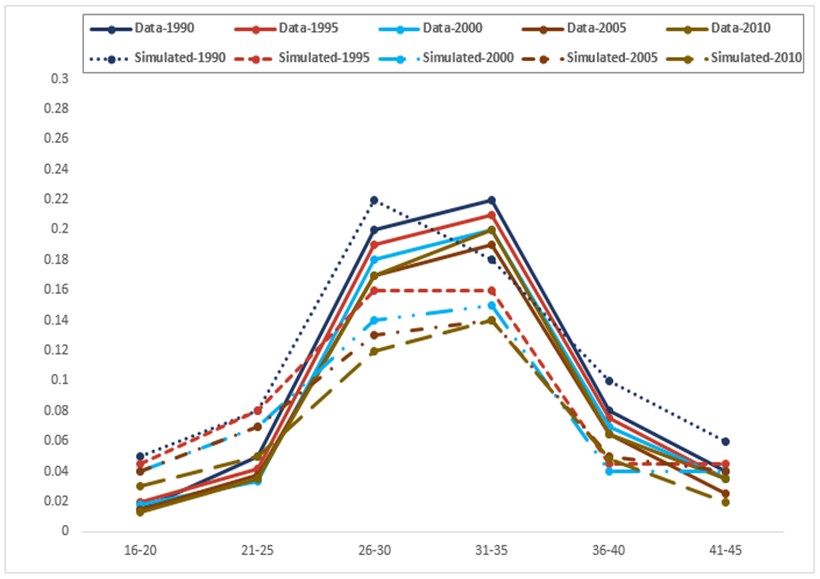
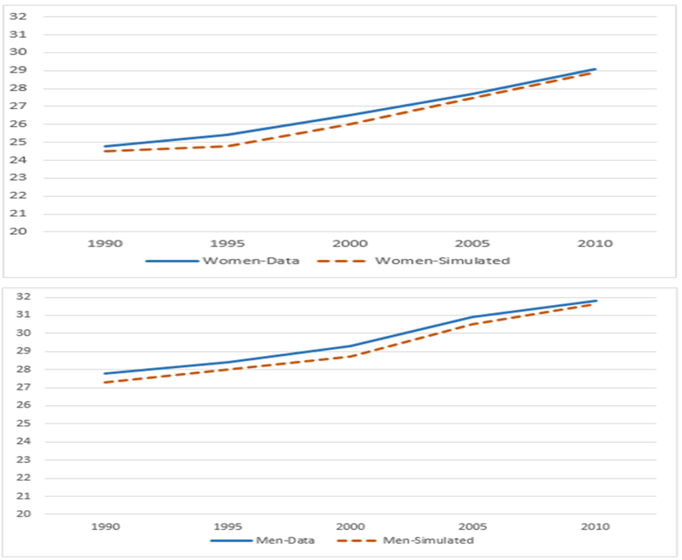
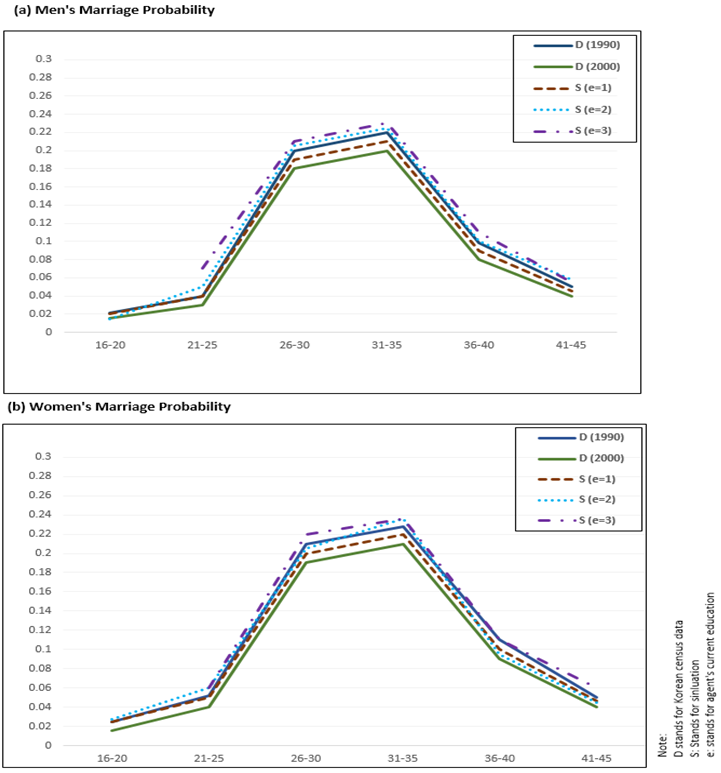
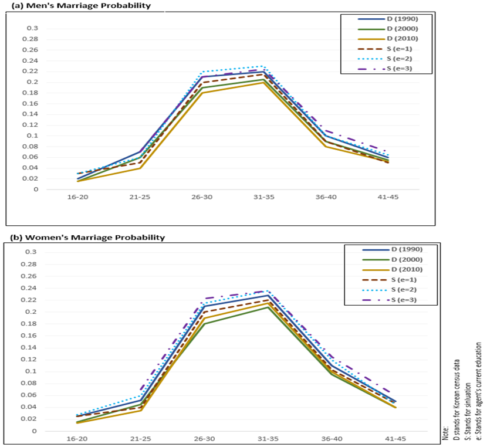

Abstract
Abstract
- In this paper, we propose a data-driven agent-based modeling approach that boosts the strength of agent-based models (ABM) in the dynamics of family formation. The proposed model analyzes the impact of socioeconomic factors on individual decisions about family formations. The key features of our model are the heterogeneous nature regarding agent’s age and socioeconomic factors: income and education. Based on these attributes, agents take decisions about acceptable partners and transition to family formation. One of our objectives is to fill the gap that exists between the methodologies of demography and agent-based social simulation. Making such a connection between these two approaches, this model attempts to incorporate empirical data into agent-based social simulation which enables us to analyze the transition of family formation effectively. Further, our simulated results depict the patterns of the hazards of family formation that are observed at micro-level dynamics and explains how marriage patterns change overtime. The proposed work gives a strong insight to strengthen the extent of demographic analysis through data-driven agent-based approach.
- Keywords:
- Data-Driven, Agent-Based Model, Family Formation, Socioeeconomic Status
Introduction
- 1.1
- A social system consists of individuals with heterogeneous and autonomous behaviors and having the capability to interact with others and with the environment that reflect the behaviors of the whole population over time. These complex systems are composed of different sub-systems like societies, families, government organizations, schools etc., in which all individuals take actions based on their already set desires. However, this non-linear behavior can be studied through the development of a model and its simulation (Gilbert & Troitzsch 1999).
- 1.2
- The challenges of various social simulation methodologies motivate social scientist and demographers to explore the method of agent-based modeling, a potential simulation toolkit (Billari 2006; Billari & Prskawetz 2003). In agent-based social simulation, the researchers may be able to understand this complexity, not by trying to model it on the global level, but analyzing the emergent properties that arise from the local interactions among autonomous agents and environment (Macy & Willer 2002). ABM has been considered a convenient approach to investigate the understanding of how individuals behave and then how these individual behaviors causes macro-level outcome transferred to the whole population. This is particularly important in demographic transition models, like family formation and fertility transitions, because agent-based models allow for realistic hypotheses on the interactions among heterogeneous potential partners and parents (Billari et al. 2008; Todd & Billari 2003; Simão & Todd 2003; Diaz & Fent 2006).
- 1.3
- While modeling many real-world phenomena, the agent-based models use actual empirical data in the form of surveys and census for validation. It has been seen that usually, agent-based simulations are initialized by random distribution of agent behaviors affecting the output of the model, but can't replicate the real-world. Therefore, instead of initializing the model with random distribution, empirical data should be considered in order to bring the model closer to that specific social phenomenon. Using data-driven agent-based simulation the micro-macro inter-dependency could be obtained, that can't be modeled in a traditional micro-simulation.
- 1.4
- This paper proposes a model that incorporates empirical data into simulations and enables us to analyze population dynamics of the transition of family formations. Our method will produce models that will have more potential to analyze closely the changing patterns of demographic processes, which will give insights into strengthening the extent of demographic analysis by combining both data-based and agent-based approaches. This work also motivates demographers to not only focus on prediction and description, but motivates them to investigate the different phenomena at the transitions of life stages.
- 1.5
- To represent Korean society, the initial agents are generated from the census data of 1990.[1] The census data consists of individual parameters such as age, education, gender, education levels and age-at-first marriage, while the income level is assigned based on the education level of each agent. The model is also trying to explore the relationship among age, income and education level during the formation of family.
- 1.6
- This paper introduces a model to study the socio-economic factors and its implication for changes over time in the transition of family formation. Such model allows us to test whether changes in age-specific family formation experienced in the past can be explained by these factors. The model is designed to explain how these patterns changes over time.
Motivation:
Data-Driven Agent-based Modeling Approach
- 2.1
- Computer simulation is getting popularity in all fields of social sciences. The applications of these simulations in interdisciplinary fields like sociology, economics and demography are intended to help us to understand the properties of complex social systems in a better way. Social scientists have tried to understand the social life of individual behavior from the top down. These systems usually exhibit emergent phenomena whose properties need new categories at a higher abstraction level. There are many kinds of useful simulation approaches for Social sciences (Sterman 1991).
- 2.2
- A novel approach aims to model the evolution of this complex social life from the bottom up, considering that individual behavior causes macro-level phenomena. Furthermore, these individual changes will also lead to an evolution of the whole population over time. Traditionally, the macroscopic approach has been used to model populations like cohort component model have been widely applied in demographic studies. However, such models have limits in representing microscopic occurrences, discontinuity and heterogeneity within a system (Billari et al. 2003). Microsimulations (MSM) is such a bottom-up approach using for modeling the individual behaviors of a system under a range of conditions through the provision of rich details about people. MSM provides valuable information over a wide range of situations. In MSM, aggregate statistics can be calculated and used as a tool to obtain the future characteristics of the population. In this approach the interaction is unidirectional only, i.e. the impact of policy on people, but not the impact of people on the policy (Wu 2012). On the other hand, MSM models do not let individuals to interact directly with each other (Lansing 2002; Macy & Willer 2002; Flache & Macy 2005). Furthermore, traditional demographic models can't fully capture the heterogeneous behavior of the agents at the micro-level.
- 2.3
- The Agent-based simulation is similar to the microsimulation, a bottom approach where the interactions are driven by autonomous actions or reactions from the agents according to their built-in rules, but are not necessarily equation or probability based. Agent-based models trying to simulate some real-world phenomena driven by empirical data. ABM can produce these alternative possibility simulation (Gilbert & Troitzsch 1999) and various platforms for understanding social interaction that lead toward demographic change (Billari & Prskawetz 2003). ABM is connected with the principles of MSM in such areas by modeling the heterogeneous nature of agents through interactions among individual agents and with environment. Furthermore, agent-based modeling allows a micro–macro link, interplay between the individual and the population level. In micro-simulation there is already such a link in one direction, such as the individual behavior on the micro level generates population dynamics at the macro-level (Billari et al. 2008).
- 2.4
- Many initiatives have taken to introduce empirical data into ABM. In the Anasazi civilization model, empirical data is used for improving the compatibility between simulated and observed history (Dean et al. 2000). In water demand model (Edmonds & Moss 2005; Galán et al. 2008) in which empirical data about various factors like household location, consumption habits and water management policies are used to simulate the model, producing a good effect while validating against actual water usage patterns. Another model of youth unemployment in Hedström model, in which survey data are used to determine transition probabilities (Hedström 2005).
- 2.5
- Researchers proposed that ABM needed to encourage social scientists to use their data with simulation approaches (Moss & Edmonds 2005). These models demonstrate how the random initialization in ABM can be tackled successfully by gathering data from census, survey, etc., and injecting the model with it. Furthermore, directly linking demographic approach with ABM will allow us to generate models to enlighten our knowledge about population change and at the same time helping us to avoid the drawbacks of relying on empirical data (Silverman et al. 2011). Our approach will allow social scientist and demographers to explore complex scenarios over long time rather than heavily depending upon statistical approach. Our model can motivate the demographers to concentrate not only on prediction and description alone, but on a methodology to explore the scenario of population change and some useful insight of the whole process. Thus, this work elaborates a methodology for building data-driven agent-based models, using the empirical data not only for the validation, but also for design and initialization.
Proposed
Model: The Family Formation
- 3.1
- In this paper, we introduce a model to study socio-economic
factors and its implications for changes over time in the transition of
family formation. Such a model allows us to verify whether changes in
age-specific marriage patterns experienced in the past can be explained
by socio-economics factors. Hence our model is designed to explain how
this pattern changes over time. In order to reduce the complexity of
the model, we are making some assumptions about the behavior of the
agents before actual simulation. The significant features of our model
are the heterogeneous nature of our agents. Although, we evaluate our
model using Korean data, but the scope and aims of the model are more
general as the phenomenon can be applied to any relevant context. The
purpose of our model is to get general insights while taking a decision
about family formation under various assumptions. In order to analyze
the simulation patterns, the model has been calibrated to data and
reproduces some of the features through our simulation.
Model Specification
- 3.2
- In order to represent the Korean society, we copy the initial data from a 100,000 sample of the 1990 census data (KOSTAT[1]). This initial data has different agent's characteristics such as age, kinship relation, marital status, gender, education levels and age-at-first marriage while the disposable income level is calculated from the monthly income and expenditures of Korea.
- 3.3
- Before simulation, we have made some assumptions and hypothesis. The period of family formation starts at the age of 16 and ends at 45, so during simulation the age of each agent is 16 to 45. We are considering that a female agent may start the process for family formation. Each agent is single and considering her first marriage and expected partner would not be in her kinship. During simulation, we ignore the mortality rate and assume that all agents survive until the age of 45. The age-difference between the partners would not be more than five years. Therefore, we select those people from the initial sample data whose marital status is single and between the ages of 16 and 45. Based on the current age, each agent may also have desired level of education. In the course of simulation, the female may change her education level.
- 3.4
- The main purpose of our work is to analyze the impact of
socioeconomic factors while taking decisions of family formation over
time. In our model, the income level of each agent is based on the
level of education. The higher-education level insures a high-income
level, because education plays a major role in income and median
earning's increases with each level of education (Winkleby et al. 1992).
Individuals with higher levels of education earn more and are more
likely to be employed (Baum at al. 2013).
In Korea, the women with a higher-education level such as college and
university graduates, participated more in the economic activities as
compared to other women (Kye 2008).
Simulation Procedure
- 3.5
- We simulate the model for 10 and 20 years in order to
compare our results with actual data of 2000 and 2010. Since, our model
explains how the patterns of family formation change over time,
therefore, we ignore the fertility process as there would be many
female agents counted in 1990 census that have given birth to new
children who may later participate in the family formation process. In
order to compare exactly our simulation results with the
education-based probability data of 1990, 2000 and 2010, we divide the
agents into six different groups: 16–20, 21–25, 26–30, 31–35, 35–40 and
41–45 and then take the average probability of each group. The first
four age groups also show various education levels, like age group
16–20, 21–25 and 26–35 (26–30, 31–35) consider school, college and
university-level education respectively. The agents find an acceptable
partner with probability in Equation 1 (Diaz
& Fent 2006).
(1) - 3.6
- Further, the probability of an agent among all age groups
is calculated using Equation 2. It will show the chances of agents who
find an acceptable partner among all agents struggling for a life
partner.
(2) - 3.7
- After finding an acceptable partner by age, both partners
then calculate their combined disposable income. They calculate their
disposable income after deducting living expenditure and taxes in order
to determine if there is enough left over to support financially a
household life. Equation 3 calculates the agent disposable income
before taking decision for marriage. The disposable income would be the
remaining income after deducting all kinds of expenditures and tax from
regular income. The disposable income must be greater or equal to the
median income of the population as described in Equation 4. Poor
economic conditions make potential partners postpone the marriage event
with the hope to attain a better economic condition in the future.
Table 1 describes all
parameters that are used in Equations 1 to 8. In order to calculate the
disposable income, we are using monthly income, expenditure, tax and
median income data from the Korean statistics information services
(KOSIS[2]).
(3) (4) - 3.8
- During simulation, we assign the income based on the level
of education of the agent. During each simulation step each agent is
aged by one year, therefore, with the passage
of time, the education level of agents might change based on the
agent's desired education level . People who desired for
high-level education need to finish their education before they reach
to the age of 35. The age-specific education transition rate is based
on empirically observed transition rate of Korea. The desired education
level is based on the current education, age and baseline year.
First, the desired education is subject to the following restrictions.
- 3.9
- The probability of desired education to with
the current education level to and age-groups: 16-20,
21-25, 26-30, 31-35 are given by Equations 5, 6 and 7.
(5) (6) (7) - 3.10
- In order to know the ratio of all agents at each age group
with the educational level , education would be either school,
college or university levels having values 1, 2 or 3 respectively.
Equation 8 calculates the share of agents having education at
each age group.
(8) Table 1: Numerical parameters and their descriptions Numerical Parameters Descriptions Initial population size, = 100,000. On the basis of starting population, N number of agent's characteristics is created for evolution of the family formation. current age Lower age limit. In proposed model the lower age limit is set to 16 years Upper age limit. The in proposed model the upper age limit is set to 45 years
The probability that an individual found an acceptable partner for marriage
The probability that individual found an acceptable partner in his age group
Initial probability of marriage in the first year of simulation, we set it to 20%
Household income of each agent
Household expenditure of each agent
Regular tax to be paid by each agent
Disposable income of each agent
Median income, this is considered as minimum income for affording married household expenses of each agent Desired education (desired education for school, college and university level education is 1, 2 and 3 respectively) Agent's current education (current education for school, college and university level education is 1,2 and 3 respectively) Age groups (15-20, 21-25, 26-30, 31-35, 36-40, 41-45) Shares of agents in specific age and specific education Model Implementation
- 3.11
- The model is implemented in Anylogic professional 7.0 software, because the language of AnyLogic has unmatched flexibility and enables us to capture the complexity and heterogeneity of business, economy and social systems at any desirable level of details to gain deeper insight into interdependent processes going on inside and around the organization (Professional Anylogic[3]).
- 3.12
- During the simulation, each step or iteration being considered is one year. The agents wander around the virtual bounded world during simulation, representing a small geographic area. For the sake of simplicity, here school-level education combined all kinds of school education, i.e. elementary, middle and high school.
- 3.13
- At each time every individual agent have an
identity and four characteristics: age ,
education , desired education and income
. Education is an influential variable while assigning
income levels to agents. Like in the real world, first to become
partners, every agent searches for an acceptable partner based on her
age. After finding an acceptable partner, they calculate their combined
disposable income. The partners get married if the disposable income
meets with the desired income level otherwise wait for indefinite time
until they meet with their set desires. Postponement of marriage to
meet the individual desires lead toward late marriage phenomena. In our
simulation, the desired income would be achieved, if the disposable
income become greater or equal to the median income. In order to find
an acceptable partner, each agent would marry the very first partner
who is acceptable with respect to age and desired income level. Our
simulation can't handle other real-world criteria like social
interaction, aesthetic sense that might play a major role during family
formation. The pseudo-code for this model is available in the Appendix.
Data Specification
- 3.14
- As described before, the initial number of agents are 100,000 taken from the census data of 1990. The actual size of 1990 is approximately 43 million, so the scaling factor is 430 means each agent represents the behavior of 430 people in the actual world. Further, we compare the data-based first marriage probability of 1990, 2000 and 2010 with our simulated probabilities of 10 and 20 years respectively.
- 3.15
- Table 2 shows the detail description of initial data taken from 1990 Korean census. Out of total 100,000 agents, we have 53128 unmarried agents between the ages of 16 and 45. In order to see the age-specific marriage patterns over time, we divide the number of acceptable agents among various groups. We can see that the total number of male agents is greater than the number of female between the ages of 16 and 45. During simulation, we discard the remaining male agent once all female agents found partners.
- 3.16
- We are using three levels of education, whereas empirical
data has 6 levels. Therefore, merged into a total of three levels,
elementary, middle and high school called school level while university
and graduated called university level. The agents have also desired
education, which is based on agent's age and current education level.
In our simulation, the desired education is assigned between the ages
of 16 and 35. The level of desired education must be greater or equal
to the current education level. The household income and expenditure
are taken from Korean statistical information services (KOSIS[2]).
Table 2: Initial data description taken from 1990 census Agent's age Number of male agents Number of female agents Total number of agents 16-20 5071 4985 10056 21-25 5209 3998 9207 26-30 5672 5586 11252 31-35 4802 5146 9948 36-40 3390 3593 6938 41-45 2812 2864 5676 16-45 26956 26172 53128
Experimental
Results
- 4.1
- We are mainly interested in the hazard of marriage in order
to compare our results with the actual data. The screen shots of our
model implementation in Anylogic are shown in Figure 1.
Since our focus is mainly on the transition to family formation, we
primarily show developments of the age at marriage and the probability
of marriage and then present the age-group rate for selected results.

Figure 1. Propose model development interface in Anylogic professional - 4.2
- We start with an initial population distribution and exposed to the Korean marriage probabilities of 1990 and simulate it forward in time for 10 years i.e. till 2010. Compare the simulated results with observable data-based of 1990, 1995, 2000, 2005 and 2010. Figure 2 presents irregular results of simulation where we are not considering education and income features at the mean age for marriage. This base model can neither replicate the increase in the mean age at marriage nor any shift in probabilities during this time period. By neglecting the role of education and income during the decision at marriage time, our model fails to replicate the development of mean age at marriage that occurred in this five years interval.
- 4.3
- Figure 3 shows the
probability of the marriage process in 1990, 1995, 2000, 2005 and 2010
at various age groups. We can see that both simulated and data-based
results are quite different. Again, our model fails to replicate the
actual data based results.

Figure 2. Data and simulated based mean age at marriage (without considering education) of male and female from 1990 to 2010  Figure 3. Data and simulated based probabilities of marriages (without considering education) from 1990 to 2010 among various ages - 4.4
- Agents with higher education got higher income than agents
with the lower education level. On the other hand, the age of people
increases while getting a higher education, because people usually wait
for marriage until completion of higher education to secure his/her
financial position. Keeping the above results in our mind, we adjusted
parameters of education and income, first simulation starting from the
year 1990 and exposed to the mean age at marriage of 1995, 2000, 2005
and 2010 with an average of 100 simulation runs. We run our simulation
for 20 years and tested our simulated results with already calculated
first observable data-based mean age at marriage of 1990, 1995, 2000,
2005 and 2010. Figure 4
demonstrates the potential role of education-based income to replicate
the mean age at marriage over time. We can see that the average
simulated result of all three-education levels almost replicated the
data-based result.
 Figure 4. Data and simulated based mean age at marriage based on education of male and female agents from 1990 to 2010 - 4.5
- Further, we test the probability of family formation by
considering education and income levels in different age groups.
Age-group probabilities of 1990 as baseline year are presented. To
compare with data-based probability of 1990 and 2000, the probabilities
are presented in age groups. During experiments also, we obtained very
close probability patterns in the same age group. We run the simulation
for 10 years and exposed the result of the year 2000. Using current
education and desired education levels a deep sensitivity analysis
indicates that we got from our simulation almost the best fit to actual
empirical probability of 1990 as shown in Figure 5a
and 5b. In both male and female
cases, the actual probability is almost equal to the mean of the
probabilities from all three-education levels. Our simulated and
observed data based results are not properly replicated in 2000 in the
age groups of 26-30 and 31-35. Probably, the Asian financial crises in
1997 that hit Korean economy badly showed a decline in the rate of
marriage as well as fertility. Our model is not able to handle such
unusual shifts.
 Figure 5. Data and simulation based probabilities with education levels in various age groups of male and female agents from 1990 to 2000 - 4.6
- For further analysis, we again initialize the model with
Korean census data from 1990 and run out simulation for 20 years up to
2010. Like previous simulation, we apply education and income levels in
order to calculate the marriage probability. A deep sensitivity
analysis indicates that the already observed data-based probability of
marriage from 1990 to 2010, and education- based simulated probability
of the marriage validates the remarkable performance of our proposed
model as shown in Figure 6a and
6b. In both male and female
cases, our simulated trends replicated the data based probability
trends of 1990. Our simulated and observed data based results in 2000
and 2010 are not properly replicated in the age groups of 26-30 and
31-35. As already mentioned, due to the 1997 financial crises our
simulation could not observe this shift; because of already set
criteria for making decisions.
 Figure 6. Data and simulation based probabilities with education levels in various age groups of male and female from 1990 to 2010
Discussions
- 5.1
- The simulation results presented are based on the premise that family formation is the outcome of the socioeconomic status of the individuals. We designed a data-driven agent-based model starting from the micro-level in order to take a decision for family formation. Calibrating our model to Korean census data, we have shown that our model closely captures the patterns of the marriage hazards over the two decades to a high degree. Our model results verified that changes in age-specific family formation that experienced in the past could be explained by socio-economic factors.
- 5.2
- Our results demonstrate that the socioeconomic status of individuals is foremost important to take decision about family formation. The increased job insecurity and income imbalances reduced the number of marriages and raised the average age for tying the nuptial knot, which also lead to low fertility rate. It can be stated that this ABM approach can enhance the methods by improving our knowledge about demographic transitions and motivate us to strengthen the micro-macro link. We also intend to apply our model to various social contexts in order to test its validation.
- 5.3
- Our work also demonstrates the feasibility of such an approach by applying it to the transition of family formation. To test the sensitivity of our model we ran a simulation in which we change alternatively different key parameters like education, income, desired education. The alternative set of experiment validates the approach of our model. In future, we are intending to include other parameters and empirical data of various years for comparison to authenticate the scope of our results.
Conclusions
- 6.1
- In this paper, we built a family formation model starting from the micro-level, including socioeconomic influence as the key force driving the process of first marriage. Our experimental results demonstrate that stability in socioeconomic status is the foremost important factor for family formation. This work is also an attempt to make a link between demography and agent-based social simulation. For the said purpose, we inject data into agent-based simulation in order to analyze population dynamics of the transition of family formation. The results of our simulations can replicate the patterns of the hazards of marriage that observed at the population level, which shows the applicability of the proposed approach. The model motivates the demographers to analyze various transitions of population dynamics through data-driven based ABM. The model will be continued to be explored in order to reach the tipping point where some combination of policies could be enacted to turn the transition to family formation. Moreover, social interaction, occupation and migration factors may also contribute significantly to the process leading to marriage.
Acknowledgements
-
The work is supported by the Korea ICT R&D program of MSIP/IITP (10047117, Development of Distributed/Parallel Multi-Dimensional Demographic Micro Simulation Technologies for Population Dynamics and Socio-Economic Experimentation). The authors also extend their thanks to the whole social simulation team for their constant advice during the development of the work.
Notes
Appendix
-
Pseudo-Code of the Model
; Generate 100,000 agents
;; Seed appropriate values based on Korean's 1990 census data
Generate two types of agents: male and female
Global variables:
{
f-upper-age-limit;;45
f-lower-age-limit;; 15
Monthly-income;; Korean average income based
on education-levels;; 2=school, 5=college, 6= university
cost-of-monthly-household-life;; Korean average monthly expenditure
income-tax-single
income-tax-married
}
All agents track these variables:
{
age;; each agent have 15<=age<=45
f_marital_status;; 1= single, 2= married
m_marital_status;; 1= single, 2= married
Sex ;; 1=male 2=female
salary ;; yearly income for each agent
age_at_marriage;;
}
Marriage variables:
{
HouseholdIncome ;; combined income of the couple
DisposableIncome ;; after taxes and expenditure deducted
}
Female agents will also track:
{
Male partner
Partner age;; f_age +/- 5
marriageClock ;; this manages how long female will wait for marriage,
starting from lower age limit till married)
desired education?;; yes if female is determined to continue
education before or after marriage
}
Initialize the family formation model:
Create population from 1990 Korean census data
{
Seed age, marital-status, education, sex, household relationship
Get only unmarried male and female
Get only those male and female whose age is greater >=16 and <=45
seed sex: male to 1 and female to 2
seed education: 2,3,4=school, 5=college, 6=university
Seed income from Korean statistics based on education
Set biological clock variable to randomly to 0 or 1
select if female have desired education or not
}
Create marriages between portions of the initial population
Assign marital status=2
End setup process
The Basic partner-search Algorithm:
wander ;; move agents around the virtual world to meet each other
grow-old ;; increment agent ages by 1 year per 1 tick
generate-income ;; combined income calculated
Take income-based-decision;; compare income
find-partner ;; lets get married
partners agents get married;; based on desired set of income for family life
Generate-desired-education: assign based on current education level
Household relationship;; husband and wife
Tick one year
Stop if there are no more agents or 300 years have passed
To grow-old
increase agent age by one year (per tick)
agents discarded when crossed upper age limit for marriage (45 years)
Increase income level based on current education level
End grow-old procedure
To find-partner;; females find male partner
Single females over 15 years old look around the world for eligible
males not less than 16 (age-difference = +/- 5)
Depending on the value set (socio-economic level) to the woman-marriage-desire
variable, she decides whether to get married
If she decides to marry, she chooses a male with an age normally distributed around her own +/- 5 years
no, male or female dies before they reach to the age of 45.
End find-partner procedure
To grow-population
Married females within fertility age range (16 to 45) who have not get
married in the previous year,
calculate based on her family's disposable income whether she has achieved
his desired financial position to go for marriage
Both male and female also considers the "desired
education" variable set in the initialization stage when figuring income.
If she determines there is enough disposable income
for her family life, she get married considering her first marriage.
Both male and female marital status set to 2 not involved any more for partner search
End grow-population procedure
To Generate-income
Determine the education level that couple has
Assign income based on acquired education from Korean statistics
Calculate combined salary between the couple
If the couple Disposable income = combined income – (household expenditure + annual income Tax)
;; expenditure, Tax and median income from Korean statistics
End Generate-income procedure
To Take income-based-decision
If Disposable income >= Median income (overall
population)
Take decision;; get-married
End Take income-based-decision
To generate-desired-education
Determine the current education level that agents have
Desired education is allocating b/w ages 16 to 35
Desired education level always >= current-education level
Each agent can change his/her education level to higher level while growing
Once agent age become > 35 then agent is not able to set
desired education (age over for desired education)
End generate-desired-education
Conditional logic procedures for seeding ages based on gender – use data from Korean census 1990
Conditional logic procedures for seeding salaries based on education –
use data from Korean Statistics (KOSIS)
;; population ;; 0 to 100,000
;;cost-of-living ;; yearly expenditures for household
;;govt-Tax ;; amount govt gives per person
;;female-desire-marriage ;; percentage of females who want to marry
;; Education-before/after-marriage ;; percentage of females who wants to
improve education before or after marriage
References
- BAUM,
S., Ma, J., & Payea, K. (2013). Education pays 2013.
The Benefits of Higher Education
for Individuals and Society.Trends in Higher Education
Series. College Board.
Archived at: https://trends.collegeboard.org/sites/default/files/education-pays-2013-full-report.pdf
BILLARI, F. C & Prskawetz, A. (2003) Agent-based computational demography: using simulation to improve our understanding of demographic behaviour. Springer, Heidelberg: Physica Verlag.
BILLARI, F. C., Prskawetz, A., Diaz, B. A., & Fent, T. (2008). The "Wedding-Ring": An agent-based marriage model based on social interaction. Demographic Research, Volume 17, 17, 59. [doi://dx.doi.org/10.4054/DemRes.2007.17.3]
BILLARI, F.C. (2006). Bridging the gap between micro-demography and macro-demography. In Caselli, G., Vallin, J., and Wunsch, G. (eds.), Demography: analysis and synthesis, Vol 4. New York: Academic Press/Elsevier: 695–707.
DEAN, J. S., Gumerman, G. J., Epstein, J. M., Axtell, R. L., Swedlund, A. C., Parker, M. T., & McCarroll, S. (2000). Understanding Anasazi culture change through agent-based modeling. In Kohler, T. A. & Gumerman, G. J. (eds) Dynamics in human and primate societies: Agent-based modeling of social and spatial processes, New York: Oxford University Press, 179–205.
DIAZ, B. A., & Fent, T. (2006). An agent-based simulation model of age-at-marriage norms. In Billari, F. C., Fent, T.. Prskawetz, A. & Scheffran J. (eds.), Agent-Based Computational Modeling. Applications in Demography, Social, Economic and Environmental Sciences, Heidelberg: Physica-Verlag, pp. 85–116.
EDMONDS, B., & Moss, S. (2005). From KISS to KIDS–an 'anti-simplistic' modeling approach. In Davidsson, P., Logan, B. & Takadama, K. (eds.), Multi-Agent and Multi-Agent-Based Simulation, Heidelberg: Springer Verlag, pp. 130–144.
FLACHE, A., Macy, M. W., (2005). Social life from the bottom up: Agent modeling and the new sociology. In C. M. Macal, D. Sallach, & J. North (Eds.), Proceedings of the Agent 2004 Conference (No. 2004). The University Argonne National Laboratory of Chicago.
GALÁN, J. M., del Olmo, R., & López-Paredes, A. (2008). Diffusion of domestic water conservation technologies in an ABM-GIS integrated model. In Corchado, E., Abraham, A. & Pedrycz, W. (eds), Hybrid Artificial Intelligence Systems, Heidelberg: Springer, pp. 567–574. [doi://dx.doi.org/10.1007/978-3-540-87656-4_70]
GILBERT, N., Troitzsch, K.G. (1999) Simulation for the Social Scientist. 1 ed. Open University Press.
HEDSTRÖM, P. (2005). Dissecting the social: On the principles of analytical sociology (pp. 114–44). Cambridge: Cambridge University Press.
KYE, B. (2008). Delay in first marriage and first childbearing in Korea: Trends in educational differentials. California Center for Population Research. http://escholarship.org/uc/item/0x58f1p5
LANSING, J. S. (2002). "Artificial societies" and the social sciences. Artificial Life, 8(3), 279–292. [doi://dx.doi.org/10.1162/106454602320991864]
MACY, M. W., & Willer, R. (2002). From factors to actors: Computational sociology and agent-based modeling. Annual review of sociology, 143–166. [doi://dx.doi.org/10.1146/annurev.soc.28.110601.141117]
MOSS, S., & Edmonds, B. (2005). Towards good social science. Journal of Artificial Societies and Social Simulation, 8(4), 13. https://www.jasss.org/8/4/13.html
SILVERMAN, E., Bijak, J., & Noble, J. (2011). Feeding the beast: can computational demographic models free us from the tyranny of data? In: T. Lenaerts, M.Giacobini, H. Bersini, P. Bourgine, M. Dorigo and R. Doursat (eds.) Advances in Arti cial Life, ECAL 2011, MIT Press, Cambridge MA, USA (pp. 747–754). http://eprints.soton.ac.uk/272839/. Achieved at: http://www.webcitation.org/6dQ9GYpxl
SIMÃO, J., & Todd, P. M. (2003). Emergent patterns of mate choice in human populations. Artificial Life, 9(4), 403–417. http://www.ncbi.nlm.nih.gov/pubmed/14761259. [doi://dx.doi.org/10.1162/106454603322694843]
STERMAN, J. D. (1991). A skeptic's guide to computer models. Managing a nation: The microcomputer software catalog, 2, 209–229. http://www.systems-thinking.org/simulation/skeptics.pdf. Achieved at: http://www.webcitation.org/6dQ9q5Ot2
TODD, P. M., & Billari, F. C. (2003). Population-wide marriage patterns produced by individual mate-search heuristics. In Billary, F. C & Prskawetz, A (eds), Agent-based computational demography: using simulation to improve our understanding of demographic behaviour, Heidelberg: Springer Physica Verlag, pp. 117–137. [doi://dx.doi.org/10.1007/978-3-7908-2715-6_7]
WINKLEBY, M. A., Jatulis, D. E., Frank, E., & Fortmann, S. P. (1992). Socioeconomic status and health: how education, income, and occupation contribute to risk factors for cardiovascular disease. American Journal of Public Health, 82(6), 816–820. http://www.ncbi.nlm.nih.gov/pmc/articles/PMC1694190/. [doi://dx.doi.org/10.2105/AJPH.82.6.816]
WU, M. B. (2012). A hybrid microsimulation model for a UK city population with dynamic, spatial and agent based features. University of Leeds. http://etheses.whiterose.ac.uk/id/eprint/3758. Achieved at http://www.webcitation.org/6dWBwsDQv